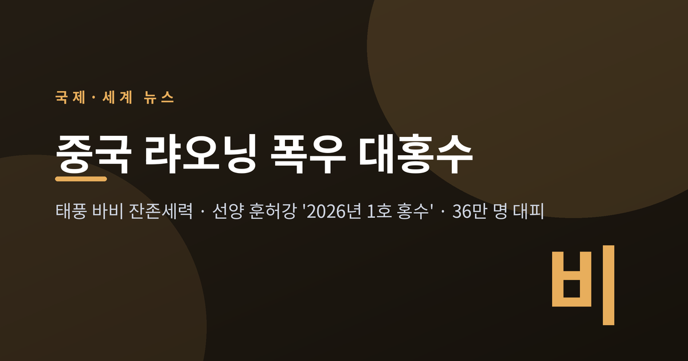
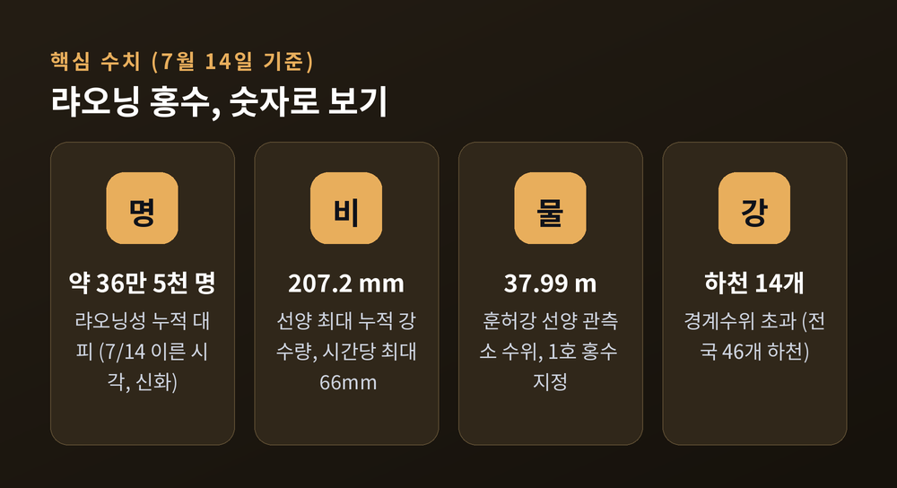
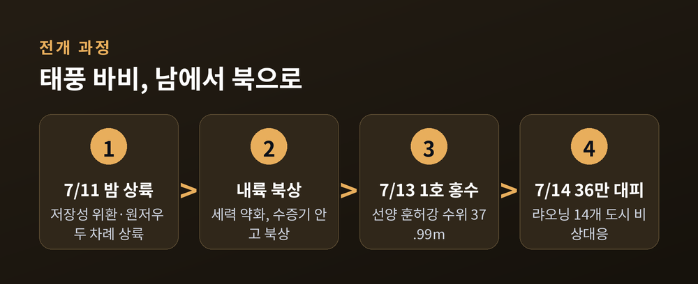
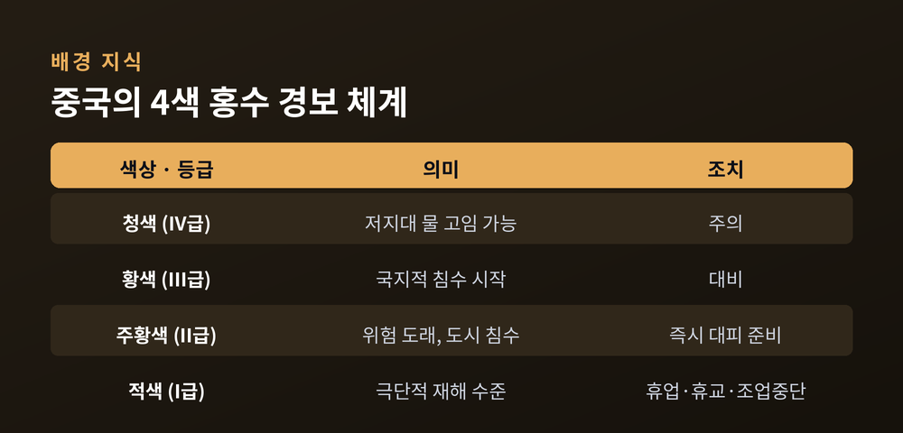
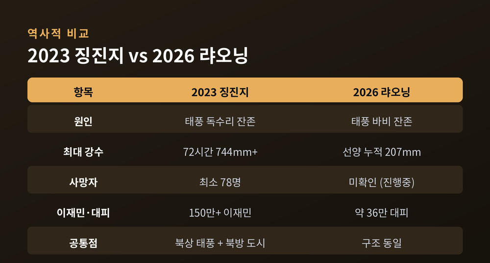
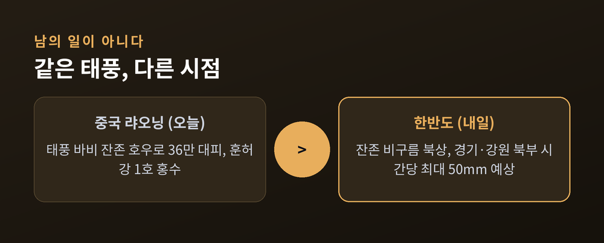

이번 글에서는 2026년 7월 중국 동북부 랴오닝성을 덮친 기록적 폭우와 대홍수를 정리해 보겠습니다.
먼저 결론부터 말씀드립니다. 이 홍수는 갑작스러운 국지성 소나기가 아니라, 저장성에 상륙한 태풍 '바비'가 내륙으로 북상하며 만든 극한 호우의 결과입니다. 그리고 그 비구름의 끝자락은 지금 한반도를 향하고 있습니다.
시작은 바다 건너 남쪽이었습니다.
제9호 태풍 바비는 7월 11일 밤 중국 저장성 위환 부근에 상륙했습니다. 자정 무렵 원저우 웨칭에 두 번째로 상륙했습니다. 올해 중국 본토를 때린 가장 강력한 폭풍이라는 평가가 붙었습니다.
상륙한 태풍은 육지에서 힘을 잃습니다. 바비도 그랬습니다. 다만 세력이 약해졌을 뿐, 품고 있던 막대한 수증기까지 사라진 것은 아니었습니다. 이 비구름이 북쪽으로 밀려 올라가 동북 지역에 쏟아졌습니다.
7월 12일 밤부터 14일 아침까지, 랴오닝성 중부와 북부에 집중호우가 이어졌습니다. 선양, 안산, 푸순, 랴오양, 톄링 일대에서 '극단적 폭우'가 관측됐습니다. 성도 선양에서는 누적 강수량이 최대 207.2mm, 시간당 최대 66mm를 기록했습니다.
물이 도시로 밀려들었습니다. 신화통신에 따르면 7월 14일 이른 시각까지 랴오닝성에서 대피한 주민은 약 36만 5천 명에 이릅니다. 하루 전인 13일 보도에서 '24만 명'으로 전해졌던 숫자가, 비가 이어지면서 계속 불어난 것입니다. 여섯 개 도시에서 휴업·휴교·조업중단 조치가 내려졌습니다.


이번 사태의 상징이 된 표현이 있습니다. 선양을 가로지르는 훈허강에 붙은 '2026년 1호 홍수'입니다.
7월 13일 오후 2시, 훈허강 선양 수문관측소의 수위가 37.99m에 닿았습니다. 중국의 국가 홍수 분류 기준을 넘어선 수치입니다. 당국은 곧바로 이 홍수를 그해 훈허강의 '1호 홍수'로 지정했습니다.
여기서 오해하기 쉬운 대목을 짚어 두겠습니다. '1호'는 '가장 큰 홍수'라는 뜻이 아닙니다. 그해 그 하천에서 처음으로 공식 번호가 붙은 홍수라는 뜻입니다. 중국은 하천 수위가 경계수위에 이르거나 2~5년 빈도 이상의 홍수 규모가 되면 '번호 홍수'로 지정합니다. 행정적으로 "이제부터 공식 홍수"임을 선언해, 각급 기관의 대응 의무를 발동시키는 장치인 셈입니다.
14일 아침 기준으로 훈허·칭허·푸허를 비롯한 14개 하천이 경계수위를 넘었습니다. 전국으로 넓히면 46개 하천이 경계수위를 웃돌았습니다. 선양과 푸순은 비상대응을 최고 등급으로 끌어올렸습니다.
물길은 성 경계도 넘었습니다. 이웃 지린성에서도 후이파강 수위가 오르자 후이난현이 대응 등급을 최고로 격상했습니다. 메이허커우시의 한 마을에서는 강수량이 292.8mm까지 치솟았고, 당국은 8km 제방을 보강하며 1,400여 명을 옮겼습니다. "물마루가 아직 지나지 않았다"는 현장 관계자의 말이, 이 비가 진행형임을 그대로 보여 줍니다.

재난 보도에서 가장 조심스러운 대목이 피해 규모입니다.
이번 랴오닝 홍수의 사망자 수는 7월 14일 현재 관영매체와 외신 어느 쪽에서도 확인된 집계가 없습니다. 다만 앞선 사건이 있었습니다. 7월 4일 새벽 푸순시를 덮친 별도의 기록적 폭우로 최소 3명이 숨졌습니다. 그날 푸순의 최대 단일지점 강수량은 329mm였고, 1·3·6시간 강우 강도가 모두 역대 기록을 갈아치웠습니다.
같은 사건을 두고 전해지는 목소리는 결이 조금 다릅니다.
관영매체는 대응의 성과를 강조합니다. 푸순에서 약 3,600명을 미리 대피시켜 더 큰 인명 피해를 막았다고 전합니다. 반면 로이터는 허베이성 콴청현에서 도로 위 물이 2m 넘게 차올라 약 1,800명이 고립됐고, 주민들이 거리에서 헤엄치거나 패들보드를 타는 장면이 소셜미디어에 퍼졌다고 보도했습니다. 로이터는 이 영상이 자체 검증을 거친 것은 아니라고 밝혔습니다.
어느 한쪽만 옳다고 말하기는 어렵습니다. 관의 발표와 현장의 목격담을 함께 놓고 보는 편이 정확에 가깝습니다.
한 가지 의문이 남습니다. 태풍은 보통 화남과 화동의 이야기였습니다. 랴오닝은 태풍과 거리가 있는 땅으로 여겨졌습니다.
예전엔 그랬습니다. 지금은 달라지고 있습니다.
전문가들은 태풍이 점점 더 북쪽까지 올라오는 흐름을 지적합니다. 2021년 허난 홍수, 2023년 베이징·톈진·허베이 홍수 모두 북상한 태풍의 잔존 세력과 맞닿아 있었습니다. 기후변화와 연관됐을 가능성이 크다는 "뚜렷한 추세"라는 분석입니다.
2023년의 기억은 특히 무겁습니다. 그해 여름 징진지 지역에서는 일부 관측소의 72시간 강수량이 744mm를 넘어, 140년 관측 사상 최대를 기록했습니다. 최소 78명이 숨졌고 150만 명 넘는 이재민이 발생했습니다. 이번 랴오닝 홍수는 아직 그 규모에는 이르지 않았습니다. 다만 '북상한 태풍 + 대비가 덜 된 북방 도시'라는 구조는 똑 닮았습니다.

지형도 한몫합니다. 푸순의 한 마을은 랴오닝에서 세 번째로 큰 다후팡 저수지에 등을 대고, 좌우로 두 하천에 끼어 있습니다. 땅은 동쪽에서 서쪽으로 낮아집니다. 이런 곳에서는 저수지 방류나 수로 붕괴가 곧바로 주거지 침수로 이어집니다. 실제로 이 마을에서는 수로 세 곳이 터져 밤새 긴급 대피가 벌어졌습니다.
동북 3성은 중국의 곡창지대이기도 합니다. 여름 호우가 농경지를 덮치면 작황에 직접 타격이 갑니다. 다만 이번 홍수의 농업 피해는 아직 성 단위 집계가 나오지 않았습니다. 랴오닝 링위안시에서 농작물 300헥타르가 잠겼다는 사례가 확인됐을 뿐입니다. 곡창지대의 영향은 지금으로선 우려의 단계로 보는 것이 정확합니다.
이 대목이 우리에게 가장 가깝습니다.
랴오닝을 적신 그 태풍은 열대저압부로 약해진 채 방향을 틀었습니다. 그 잔존 비구름이 지금 한반도로 접근하고 있습니다. 7월 초 예보에서는 바비가 대만을 지나 중국으로 향할 뿐, 우리나라는 직접 영향권에서 벗어난다고 봤습니다. 그런데 14일 들어 상황이 바뀌었습니다.
기상 당국은 14일 저녁부터 15일 새벽 사이 경기 북부와 강원 북부를 중심으로 시간당 최대 50mm 안팎의 집중호우 가능성을 내다봤습니다. 수도권과 중부지방에도 강한 비가 예상됩니다. 랴오닝의 오늘과 한반도의 내일이 같은 태풍의 잔존 세력에서 나왔다는 뜻입니다.

정리하면 이렇습니다.
이번 랴오닝 대홍수는 한 도시의 사고가 아니라, 태풍이 북쪽으로 올라오는 시대의 한 장면입니다. 중국의 대응이 빨랐는지 느렸는지를 따지기 전에, 같은 하늘 아래 우리도 같은 비를 맞고 있다는 사실이 먼저 눈에 들어옵니다.
내일 창밖의 비를 조금 다른 눈으로 보게 되신다면, 이 글은 제 몫을 다한 셈입니다.